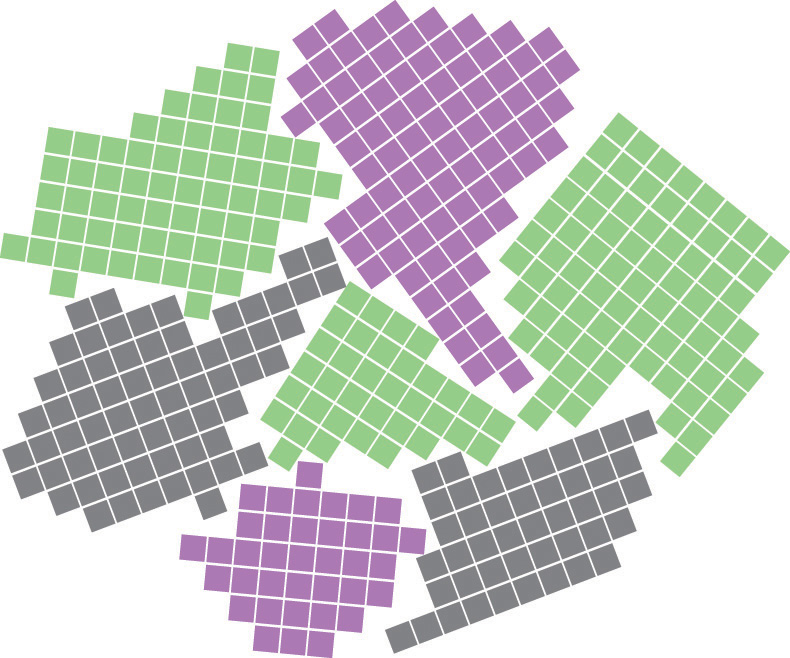
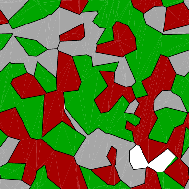
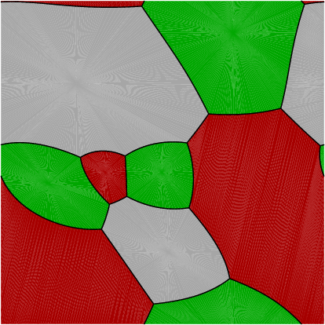

The Surface Evolver GUI, not to be confused with the Surface Evolver, is a tool that uses the Surface Evolver to simulate the growth of polycrystalline grains in two dimensions.
Polycrystalline grain boundaries have surface evergies associated with boundary curvature and misorientation between abutting grains. These act as the driving force for microstructure evolution. 
The Surface Evolver GUI runs the simulation using the Surface Evolver and evolves the surfaces based on the edited parameters such as: grain boundary Wulff energy, number of grains, number of iterations and color.This tool currently supports simulating growth for: Isotropic grains (grains with equal tension at each edge, 3 orientations), mm4-cos grains (grains with varying tension at each edge due to Wulff energies, 3 orientations), and mm4-octagon grains (grains with varying tension at each edge due to Wulff energies, 3 orientations).
To use the tool - edit the options listed below such as: how many grains to generate using a Voronoi distribution, how long to simulate the growth (iterations of "g" - a time step of the Surface Evolver), and to enable color or not for the images, then press the simulate button.
 
The Surface Evolver is a program written by Ken Brakke and can be found here.